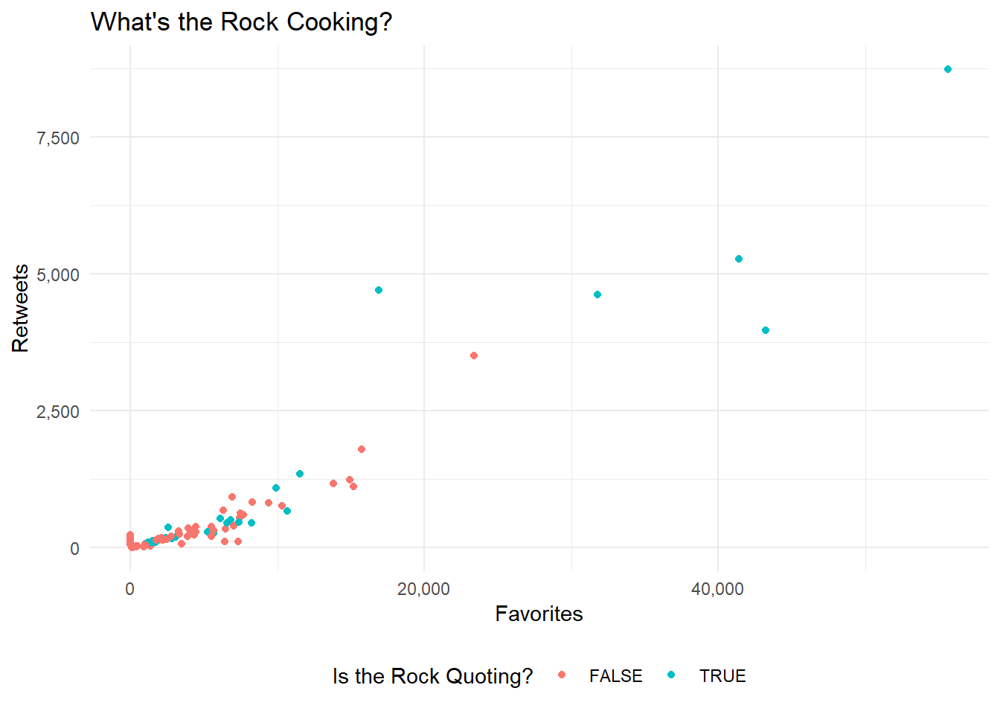

Twitter Data with rtweet
Getting Started
The vast majority of the pain that comes with pulling twitter data is getting access to and protecting your API keys. If you are unfamiliar with API keys, check out our tutorial on APIs. If you are just working on your computer, you will not need to do anything special to protect your keys beyond whatever you typically do to protect sensitive files. But since we are working in a shared environment (github), we will need to protect our keys.
Getting a Developer Account
Unfortunately, creating a twitter developer account is a bit of an involved process. Involved, in the sense that it takes awhile to do, not that its a difficult thing to do. Since it is a mostly point and click process that does not lend itself well to text, checkout the below youtube video on how to make one. Alternatively, you can just go to https://developer.twitter.com/ and follow the steps.
Saving Credentials in a .gitignore
After finally getting your credentials, you need to protect them. If you are just working locally on your computer, this is easy. Just do whatever you usually do to protect complicated passwords. However, if you are working on a git project (like this one), then you need to do something extra.
Luckily, the process is very simple. (1) Save your credentials in a different script and (2) add that script into your .gitignore, and then (3) add that script into the .gitignore.
Save your credentials into a script called keys.R
# twitter
twitter_api_key = "sample_api_key"
twitter_api_secret_key = "sample_secret_key"
twitter_access_token = "sample_token"
twitter_access_token_secret = "sample_secret_token"
Create a .gitignore file
This part is a little more complicated than you may expect because you are just creating a file. But I think the most reproducible way is through git bash. In the root directory of your project, open up bash (right click and press “Git Bash Here”), and write the following code: touch .gitignore. This will create a new file with the .gitignore file extension.
Add script into your .gitignore and then call it into your project
Just open up the .gitignore (notepad works fine), and add keys.R into the .gitignore file.
Now if you are simply just writing keys.R into the file, than it has to be in the same directory. There are a bunch of different options for .gitignore. Finally, make sure that you call the keys script into your project so that the keys are in your environment.
rtweet
We have offically passed the difficult part of the process. From here on out, it is very smooth sailing.
rtweet is a package designed to interact with twitter’s API. It is tidyverse ready meaning that its API calls return a data.frame. This is really convienient if your workflow includes things like dplyr or tidytext.
Creating a Token
Creating a token, which is what lets twitter know that you are allowed to access twitter, is very easy with rtweet. Just plug in your credentials as a string to the appropriate arguement. Since this is a shared environment, I am calling a script called keys.R that simply just declares the keys as varaibles.
library(rtweet)
source("../keys.R")
twitter_token <- create_token(
app = twitter_app,
consumer_key = twitter_api_key,
consumer_secret = twitter_api_secret_key,
access_token = twitter_access_token,
access_secret = twitter_access_token_secret
)Retrieving Topics
Retreiving a topic is very easy in rtweet. For example:
library(kableExtra)
library(dplyr)
search_tweets(q = "datascience", n = 1)%>%
select(screen_name, text)%>%
kable(format = "html")%>%
kable_styling("striped")| screen_name | text |
|---|---|
| akdm_bot |
#DataScience Free Discounts 2020 AWS SageMaker, AI and Machine Learning - With Python => https://t.co/UXdF3hQYII #100DaysOfCode #udemy #coupons #MachineLearning #Python #DataAnalysis #DeepLearning #ArtificialIntelligence #R #TensorFlow #ApacheSpark #ComputerVision #PyTorch |
What you writing is being passed directly into the q of the API call. This means you can take full advantage of all the arguments in the API. Check out the documentation to look at everything you can do.
For example, if we wanted to filter the above query to just verified users, we would add filter:verified:
search_tweets(q = "datascience filter:verified", n = 1)%>%
select(screen_name, text)%>%
kable(format = "html")%>%
kable_styling("striped")| screen_name | text |
|---|---|
| KirkDBorne | New research on adoption of #Artificialintelligence within the #IoT ecosystem: https://t.co/C58ty9cux6 by @ELETimes —————— #BigData #DataScience #AI #MachineLearning #LocationAnalytics #EdgeAnalytics #IIoT #IoTPL #Industry40 https://t.co/AnyAjeuCwY |
And if we wanted to filter to just non verified users, we would add -filter:verified:
search_tweets(q = "datascience -filter:verified", n = 1)%>%
select(screen_name, text)%>%
kable(format = "html")%>%
kable_styling("striped")| screen_name | text |
|---|---|
| xaelbot |
#DataScience Free Discounts 2020 AWS SageMaker, AI and Machine Learning - With Python => https://t.co/UXdF3hQYII #100DaysOfCode #udemy #coupons #MachineLearning #Python #DataAnalysis #DeepLearning #ArtificialIntelligence #R #TensorFlow #ApacheSpark #ComputerVision #PyTorch |
A few notes about the limitations of the API. Because you (most likely) not paying for access to twitter’s data, there is a limit to how many tweets you can pull back:
- Only returns data from the past 6-9 days
- Cannot return more than 18,000 tweets
User Data
Sometimes you aren’t looking for data based on a topic, but you just want data for a particular user. This is actually more simple than pulling data based on a topic. Let’s pull data from the Rock:
get_timeline("therock", n = 3)%>%
select(screen_name, text)%>%
kable(format = "html")%>%
kable_styling("striped")| screen_name | text | |
|---|---|---|
| therock.1 | TheRock | @TVOnTheSpot @SInow @CanesFootball @TheAthleticMIA @CanesWarningFS The moment when I silenced all 79,560 rabid Seminole fans by sacking Heisman Trophy winner, QB Charlie Ward. It was also in this moment, Charlie decided he wanted to play in the NBA over the NFL. You’re welcome, Knicks. And yes, this was my only sack of year 😂🤦🏽♂️ #makeitcount |
| therock.2 | TheRock | @arielhelwani Perfect timing and delivery, brother. And got a big genuine smiling pop outta our Bad Guy, Chael 👏🏾👏🏾👊🏾 |
| therock.3 | TheRock | @RonanFarrow Well geeezus, you sang like an angel, so I’d embarrass you too if I was your mama. #gomamamia |
Pulling back user data is even more limited than pulling back based on a topic. You are limited to the 3,200 most recent posts or rtweets.
Example 1: Pulling Data for a User
Problem
Create a scatter plot showing the retweet to favorites ratio for Dwayne “the Rock” Johnson.
Hints
- Using the
rtweetand theget_timeline()function you can pull back all the data (and waay more) that you need. ggplot2can allow you to easily put together a simple scatterplot
Solution
Due to the simplicity of the rtweet package, retrieving the data isn’t all that invovled. Simply use the get_timeline() function and boom, you got the data.
rock = get_timeline("therock", n =100)Now we just need to put it into a chart. I like the theme_minimal() function from ggplot for a simple and professional look.
library(scales)
library(ggplot2)
ggplot(data = rock)+
geom_point(aes(x = favorite_count, # how many favorited
y = retweet_count, # how many retweeted
color = is_quote # is the rock quoting?
)
)+
theme_minimal()+
theme(legend.position = "bottom")+
# adding the right title and legend label
labs(title = "What's the Rock Cooking?",
color = "Is the Rock Quoting?")+
# using comma from the scales package for the axis labels
scale_y_continuous("Retweets", labels = comma)+
scale_x_continuous("Favorites", labels = comma)
Well it looks like the Rock wasn’t cooking up to much as of 3/18/2020. We got only a few popular tweets, and that’s it.
Example 2: Search a Topic on Twitter
Problem
Now let us enter the terrifying world of regex. Specifically when it comes to cleaning up tweets.
For our next example, lets pull all the popular tweets using with the hashtag #rstats and then clean out all the hashtags and carriage returns that come with it.
Hint Personally, I think this tests your googling ability much more than than your mastery of the package. I used the following stackoverflow as the basis of my response.
Solution
data = search_tweets("#rstats", # include the topic you are searching for
type = "popular", # lets return the 'popular' tweets
include_rts = F) # no retweets pls.
data$text## [1] "In today's post about upcoming dplyr features: \n\n* select() by variable type\n* combine selections with & and |\n* new any_of() and all_of()\n* rename_with() to rename programmatically\n\nhttps://t.co/hBvc6MqGAN #rstats"
## [2] "pkgdown 1.5.0 out now — https://t.co/dm4LNH75Xr. Major improvements for packages with many articles & reference pages, and many small improvements and bug fixes #rstats"
## [3] "Easier ggplot with the ggeasy R package and easy-to-remember ways of customizing ggplot2 visualizations: https://t.co/nu5EWBZZ7x by @sharon000 \n\n#DataViz #Rstats #Coding #DataScientists #DataScience https://t.co/3USVPbiXms"That looks…gross. Lets remove the hashtags and carriage returns!
text = gsub("(?:\\s*#\\w+)*", "", data$text) # remove all the hashtags at the end
text = gsub("\n|—", "", text) # remove all the line breaks
text = gsub(" ?(f|ht)(tp)(s?)(://)(.*)[.|/](.*)", "", text) # remove urls
text## [1] "In today's post about upcoming dplyr features: * select() by variable type* combine selections with & and |* new any_of() and all_of()* rename_with() to rename programmatically"
## [2] "pkgdown 1.5.0 out now "
## [3] "Easier ggplot with the ggeasy R package and easy-to-remember ways of customizing ggplot2 visualizations:"Ah, much better!
Conclusion
This is just a taste of the all the different things that the rtweet can do. Most of the other functions in this package are just helper functions for searching for tweets, but you can also post tweets or slid into those DMs using this package as well.